[Java] 39. Spring Web Frameworkを利用してウェブサービスプロジェクトを作成する方法
こんにちは。明月です。
この投稿はSpring Web Frameworkを利用してウェブサービスプロジェクトを作成する方法に関する説明です。
以前の投稿でJavaのServletを利用してウェブサービスを構築する方法に関して説明したことがあります。
link - [Java] 38. Javaでウェブサービスプロジェクト(JSP Servlet)を作成する方法
JSP ServletというのはJavaの言語でウェブサービスを構築するようにするフラットフォームだと思います。
つまり、サーバとクライアント(Browser)の間のhttpプロトコールを利用してソケット通信するウェブサービスを別途で構築する必要がなしでServletを利用して簡単に通信環境を作られるようなフラットフォームです。
ライブラリとフラットフォームの差異はライブラリはさまざまな規約とAPIを使うためにクラスや関数を作成しておいたものだし、フラットフォームはどの環境を使うために先に構築しておいた環境です。そのため、Servletはフラットフォームという意味にもっと近いと思います。
このServletはウェブサービスを使うための先に構築された環境だと思います。しかし、そのServletは使うためにはとても不親切です。
例えば、ブラウザから要請を受け取ってServletでリターンするとhtmlデータをすべてStringタイプに変換しなければならないです。
import java.io.IOException;
import java.io.PrintWriter;
import javax.servlet.ServletException;
import javax.servlet.annotation.WebServlet;
import javax.servlet.http.HttpServlet;
import javax.servlet.http.HttpServletRequest;
import javax.servlet.http.HttpServletResponse;
// ページ要請ホスト
@WebServlet("/Test")
// ホスト名とクラス名は必ず同じに作成する必要ない。でも、クラス管理をしやすくするために合わせる方が良い。
public class Test extends HttpServlet {
// シリアルキー、HttpServletクラスは基本的にSerializableを継承している。
private static final long serialVersionUID = 1L;
// コンストラクタ
public Test() {
super();
}
// ブラウザにmethodがget方式に呼び出す時に実行される関数
// パラメータrequestはブラウザから要請した値があるデータ
// パラメータresponseはブラウザに応答する値を格納するデータ
protected void doGet(HttpServletRequest request, HttpServletResponse response)
throws ServletException, IOException {
// response.getWriter()関数でデータ領域のStreamを受け取る。
PrintWriter out = response.getWriter();
// out変数にhtmlタグを格納する。
out.append("<!DOCTYPE html>");
out.append("<html>");
out.append("<head>");
out.append("<meta charset=\"UTF-8\">");
out.append("<title>Test</title>");
out.append("</head>");
out.append("<body>");
out.append("<label>");
// パラメータのdata値を格納する。
out.append(request.getParameter("data"));
out.append("</label>");
out.append("</body>");
out.append("</html>");
}
// ブラウザにmethodがpost方式に呼び出す時に実行される関数
// パラメータrequestはブラウザから要請した値があるデータ
// パラメータresponseはブラウザに応答する値を格納するデータ
protected void doPost(HttpServletRequest request, HttpServletResponse response)
throws ServletException, IOException {
// doGet関数を呼び出す。
// つまり、get方式の要請とpost方式の要請の結果は同じ。
doGet(request, response);
}
}
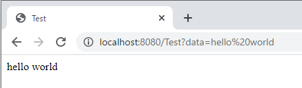
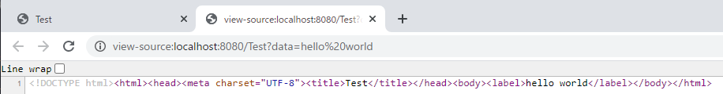
上の例をみれば、doGet関数のReponse値にhtmlタグをStringタイプに格納します。簡単なhtml値でもステップ数が結構ありますね。
それならもっと複雑なページを作ると思ったら一つのページでもすごく複雑になると思います。
そうならhtmlファイルに作ってFileStreamで読み込んでStringで変換するなら？
可能です。でも例みたいにパラメータの値やPostデータ値を格納する時はReplace関数で置換しなければならないです。また、データをStringタイプで扱うことなのでcelipseではDebugエラーをチェックしてくれないです。
そのため、Servletをそのままに使うことはすごく不便です。また、これを解決するため、毎度Frameworkを開発することは開発工数がすごくかかると思います。
Javaにはこのことを解決するためのOpen frameworkがたくさんありますが、その中でここで紹介することはSpring Frameworkです。
個人的の考えはたくさんあるframeworkの中でこのSpring Frameworkがバグも少ないし軽くて使いやすいです。個人的な考えなので人別の差異があると思います。
Springを使うためにはさまざまなライブラリが必要なので先にmavenを連結したほうが良いです。
link - [Java] 33. オープンライブラリを参照する方法(eclipseからmavenを連結)
先にSpring Frameworkを使うためにServlet環境から構築しましょう。
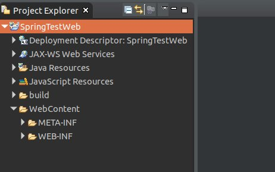
そしてmaven環境も使いしましょう。
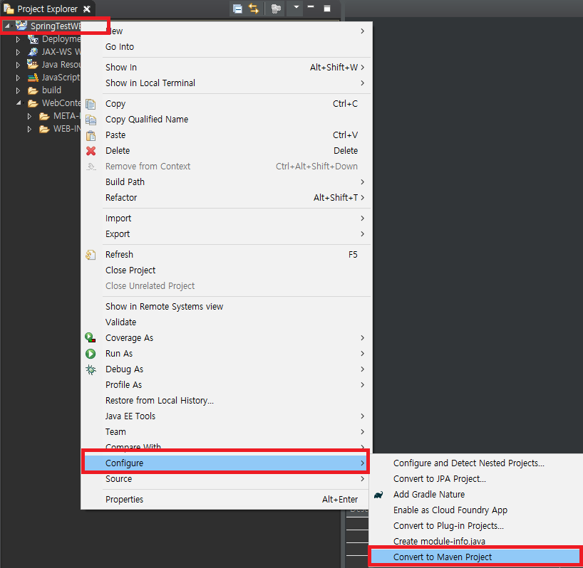
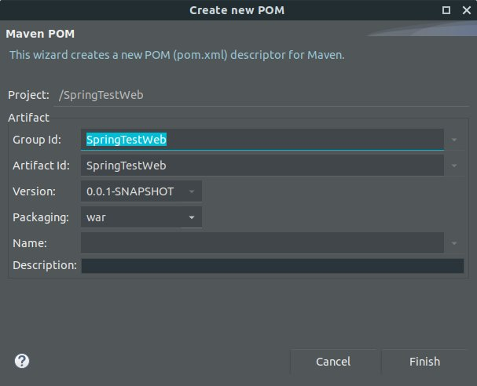
そしてpom.xmlでSpring frameworkと関係があるライブラリを連結しましょう。
<dependencies>
<!-- Spring Frameworkライブラリ -->
<dependency>
<groupId>org.springframework</groupId>
<artifactId>spring-webmvc</artifactId>
<version>5.1.1.RELEASE</version>
</dependency>
<!-- jspに変数を置換するライブラリ -->
<dependency>
<groupId>javax.servlet</groupId>
<artifactId>jstl</artifactId>
<version>1.2</version>
</dependency>
<!-- servletによく使うAPIライブラリ -->
<dependency>
<groupId>javax.servlet</groupId>
<artifactId>javax.servlet-api</artifactId>
<version>3.1.0</version>
</dependency>
</dependencies>
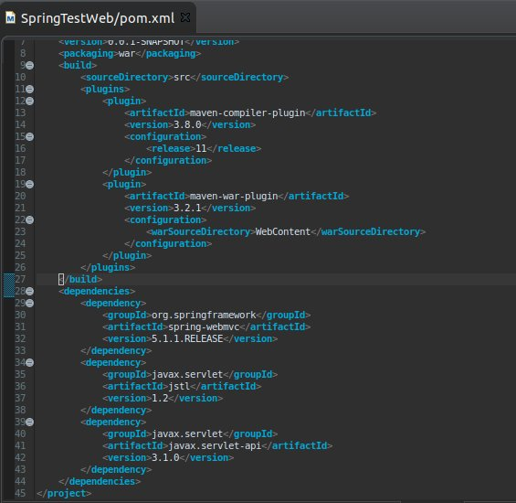
ライブラリをダウンロードしてアップデートしましょう。
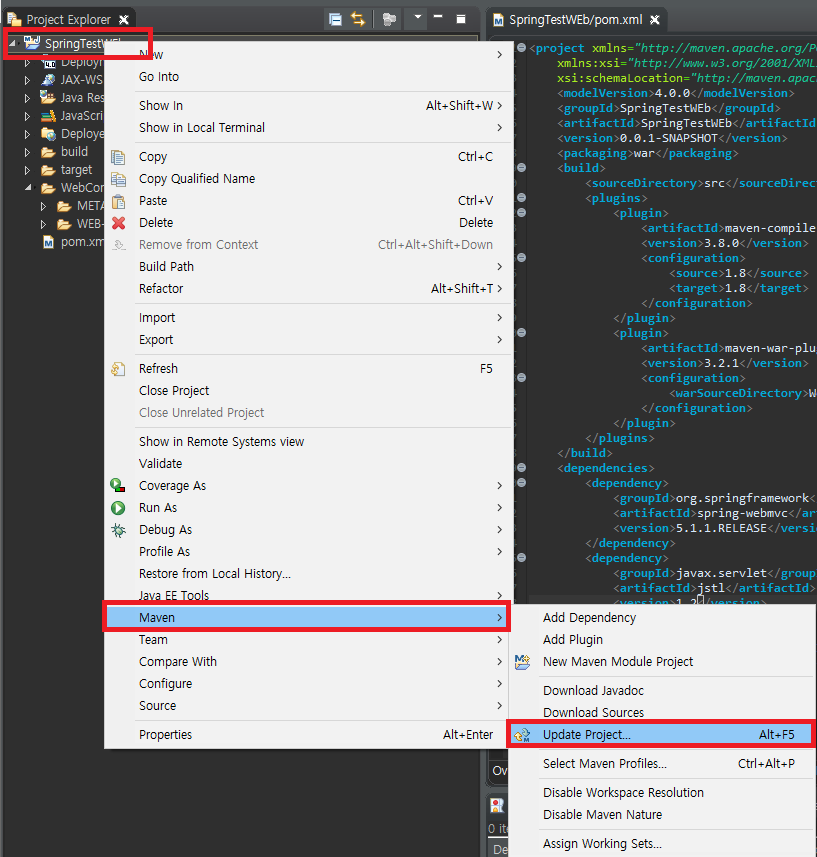
ウェブ環境を設定するファイルはweb.xmlですが、Springフレームワークを設定するファイルはmvc-config.xmlです。
WebContent -> WEB-INFフィルダー中でmvc-config.xmlを生成しましょう。
<?xml version="1.0" encoding="UTF-8"?>
<beans xmlns="http://www.springframework.org/schema/beans"
xmlns:xsi="http://www.w3.org/2001/XMLSchema-instance"
xmlns:mvc="http://www.springframework.org/schema/mvc"
xmlns:context="http://www.springframework.org/schema/context"
xsi:schemaLocation="http://www.springframework.org/schema/mvc
http://www.springframework.org/schema/mvc/spring-mvc.xsd
http://www.springframework.org/schema/beans
http://www.springframework.org/schema/beans/spring-beans.xsd
http://www.springframework.org/schema/context
http://www.springframework.org/schema/context/spring-context.xsd">
<!-- コントローラーパッケージ設定 -->
<context:component-scan base-package="controller"/>
<!-- サーブレットからjspファイルを読み込んで変換するエンコードタイプ -->
<mvc:annotation-driven>
<mvc:message-converters>
<bean class="org.springframework.http.converter.StringHttpMessageConverter">
<property name="supportedMediaTypes">
<list>
<value>text/html;charset=UTF-8</value>
</list>
</property>
</bean>
</mvc:message-converters>
</mvc:annotation-driven>
<!-- viewフォルダ設定 -->
<bean class="org.springframework.web.servlet.view.InternalResourceViewResolver">
<property name="prefix" value="/WEB-INF/view/"/>
<property name="suffix" value=".jsp"/>
</bean>
</beans>
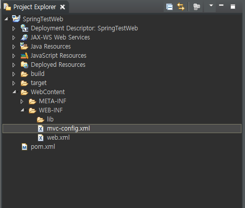
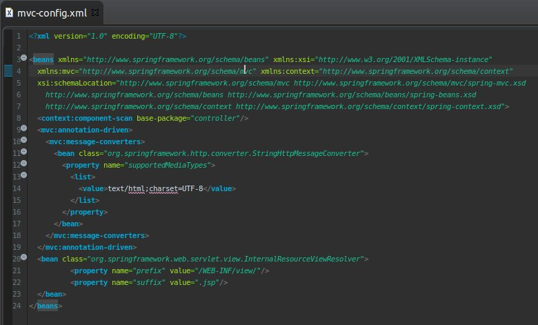
そしてウェブ環境のweb.xmlファイルでmvc-config.xmlを連結しましょう。
<?xml version="1.0" encoding="UTF-8"?>
<web-app xmlns:xsi="http://www.w3.org/2001/XMLSchema-instance"
xmlns="http://xmlns.jcp.org/xml/ns/javaee"
xsi:schemaLocation="http://xmlns.jcp.org/xml/ns/javaee
http://xmlns.jcp.org/xml/ns/javaee/web-app_4_0.xsd"
version="4.0">
<!-- プロジェクト名 -->
<display-name>SpringTestWeb</display-name>
<!-- ルート(/)の時のページ -->
<welcome-file-list>
<welcome-file>index.html</welcome-file>
</welcome-file-list>
<!-- mvc-config.xml設定 -->
<servlet>
<servlet-name>dispatcherServlet</servlet-name>
<servlet-class>org.springframework.web.servlet.DispatcherServlet</servlet-class>
<init-param>
<param-name>contextConfigLocation</param-name>
<param-value>/WEB-INF/mvc-config.xml</param-value>
</init-param>
<load-on-startup>1</load-on-startup>
</servlet>
<!-- web urlパターン、*.html拡張子でrequestするとspring frameworkで読み込む。 -->
<servlet-mapping>
<servlet-name>dispatcherServlet</servlet-name>
<url-pattern>*.html</url-pattern>
</servlet-mapping>
<!-- encodingパターン(Postなどのヘッダ値のエンコード設定) -->
<filter>
<filter-name>encodingFilter</filter-name>
<filter-class>org.springframework.web.filter.CharacterEncodingFilter</filter-class>
<init-param>
<param-name>encoding</param-name>
<param-value>UTF-8</param-value>
</init-param>
<init-param>
<param-name>forceEncoding</param-name>
<param-value>true</param-value>
</init-param>
</filter>
<!-- エンコードurlパターン -->
<filter-mapping>
<filter-name>encodingFilter</filter-name>
<url-pattern>/*</url-pattern>
</filter-mapping>
</web-app>
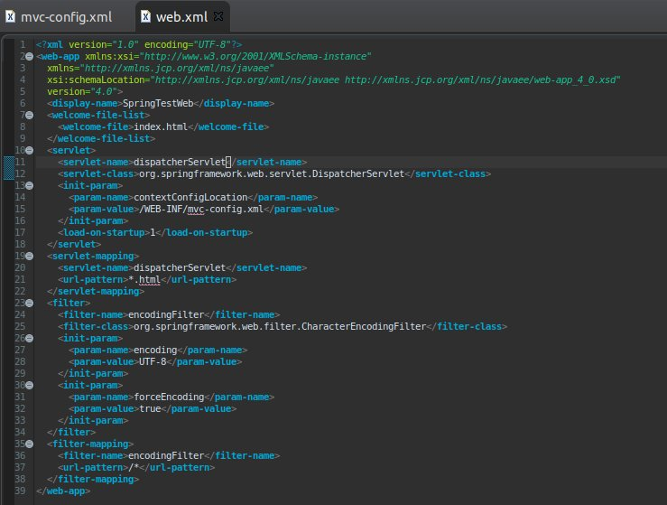
ここまでSpring Framework環境の設定でした。
これからブラウザからウェブサーバに要請するとhtmlにパーシングするクラスを設定しましょう。
mvc-config.xmlでパーシングクラスパッケージを「controller」に設定しましたので、パッケージがcontrollerのクラスを作成しましょう。
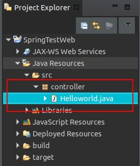
package controller;
import javax.servlet.http.HttpServletRequest;
import javax.servlet.http.HttpServletResponse;
import javax.servlet.http.HttpSession;
import org.springframework.stereotype.Controller;
import org.springframework.ui.ModelMap;
import org.springframework.web.bind.annotation.RequestMapping;
@Controller
public class Helloworld {
// 要請urlパターン
@RequestMapping(value = "/index.html")
public String index(ModelMap modelmap, HttpSession session, HttpServletRequest req, HttpServletResponse res) {
// view(.jsp)でデータを渡すためのmodelmap
modelmap.addAttribute("Data", "Helloworld");
// viewのファイル名
return "index";
}
}
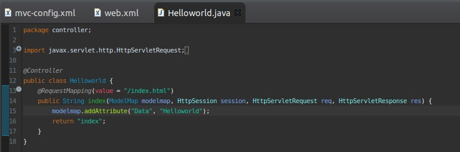
controllerクラスで重要なことは@Controllerを入れることです。そうするとSpring Frameworkでパーシングクラスに認識します。
そしてブラウザから要請すると呼び出す関数を作成して@RequestMappingアトリビュートで要請ページを設定します。
上のソースの場合は/index.htmlで要請するとindex関数が呼び出せます。参考にルートの場合はindex.htmlファイルが要請することに設定しましたので、ルートパスがindex関数を呼び出します。
modelmapにキーでデータを格納するとviewで使えます。
returnの値はStringですが、viewファイル名を指定します。私はindexで設定しました。
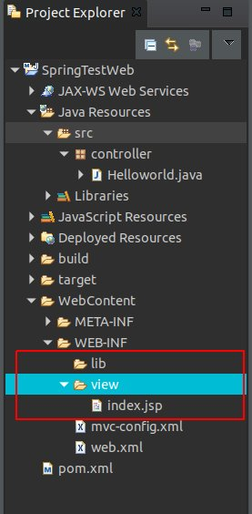
<%@ page language="java" contentType="text/html; charset=UTF-8" pageEncoding="UTF-8"%>
<!DOCTYPE html>
<html>
<head>
<meta charset="UTF-8">
<title>Insert title here</title>
</head>
<body>
<!-- modelmapで渡してもらうデータ -->
${Data}
</body>
</html>
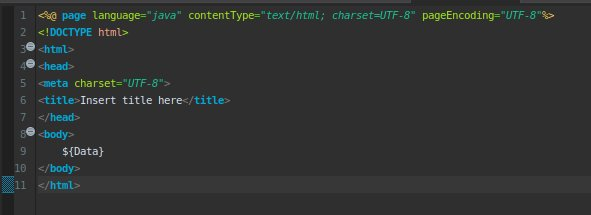
ここまで起動するための作成が完了しました。私の予想は昨日すればブラウザでHello worldが見えます。
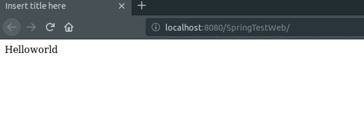
Hello worldがブラウザに表示することを確認しました。
Spring Frameworkの処理順番を要約すると下記通りになります。
1. ブラウザからurlを要請します。
2. ホスト名を除いたアドレスをパーシングします。上の例は/index.htmlを探します。
3. index.htmlは拡張子がhtmlなのでweb.xml設定によってmvc-config.xml処理に渡します。
4. Spring Frameworkと関係ある要請なのでcontrollerで/index.htmlにマッピングされた関数を探します。
5. 関数を処理してreturn値でviewファイルを探します。上の例はindexをリターンします。
6. また、mvc-config.xmlの設定によってviewファイルは/WEB-INF/view/のディレクトリでindex.jspファイルを探します。
7. index.jspファイルを呼び出してhtmlデータをパーシングします。
8. ブラウザに返却します。
結果ブラウザには最終パーシングした結果を受け取って画面に表示します。
Springに関しては他の投稿でもっと詳しく説明します。
ここまでSpring Web Frameworkを利用してウェブサービスプロジェクトを作成する方法に関する説明でした。
ご不明なところや間違いところがあればコメントしてください。
- [Java] 46. JPAのEntityクラスの基本設定(@GeneratedValue、 @ManyToMany)2019/10/11 07:30:14
- [Java] 45. JPAを設定する方法2019/10/10 07:29:43
- [Java] 44. Web Spring frameworkのviewで使うプログラム言語(JSTL) - XML2019/10/09 07:34:08
- [Java] 43. Web Spring frameworkのviewで使うプログラム言語(JSTL) - 関数、データベース2019/10/08 07:43:33
- [Java] 42. Web Spring frameworkのviewで使うプログラム言語(JSTL) - コア―、フォーマット2019/10/07 07:38:13
- [Java] 41. Web Spring webframeworkのControllerからajaxの要請する時、jsonタイプのデータを返却する方法2019/10/04 19:24:43
- [Java] 40. Web Spring frameworkでControllerを扱う方法2019/10/03 20:02:06
- [Java] 39. Spring Web Frameworkを利用してウェブサービスプロジェクトを作成する方法2019/10/02 21:00:22
- [Java] 38. Javaでウェブサービスプロジェクト(JSP Servlet)を作成する方法2019/10/01 21:48:08
- [Java] 37.イクリプス(eclipse)でトムキャット(tomcat)を設定する方法2019/09/30 22:19:34
- [Java] 36.コーディングする時、よく使うコーディングパターンとステップ数を減らす方法2019/09/27 20:39:09
- [Java] 35. コーディング規約設定(Google Standard coding style)2019/09/26 21:31:25
- [Java] 34. WindowでMariaDBをインストールする方法2019/09/25 19:58:30
- [Java] 33. オープンライブラリを参照する方法(eclipseからmavenを連結)2019/09/24 19:35:54
- [Java] 32. Reflection機能を使う方法(Annotation編)2019/09/24 00:19:25
- [CentOS] Linux環境(CentOS)でCassandra(NoSQL DB)をインストールする方法(DBeaverブラウザでNoSQL使い方)2021/11/12 17:33:58
- [Design pattern] 3-3. コマンドパターン(Command pattern)2021/11/05 17:01:42
- [Window] apache-tomcatでロードバランシング(Load balancing)する方法とセッションクラスタリング（セッション共有）2021/11/05 16:58:45
- [Window] Apacheでmod_jkとmod_proxyの差異、apacheでtomcatのwebsocketのプロキシフォーワードする方法2021/11/05 16:55:05
- [PHP] Apache環境の同じホスト中でPHPとJava(Servlet)を同時に起動、運用する方法2021/11/05 16:52:04
- [C#] 61. ウィンドウフォーム(Window form)でスレッド(Thread)を使い方、クロススレッド問題解決2021/11/04 19:29:51
- [Design pattern] 3-2. 責任の連鎖パターン(Chain of responsibility pattern)2021/11/04 19:27:58
- [Design pattern] 3-1. ストラテジーパターン(Strategy pattern)2021/11/03 18:38:52
- [C#] 60. ウィンドウフォーム(Window form)のイベント設定する方法2021/11/02 21:18:08
- [Design pattern] 2-7. ファサードパターン(Facade pattern)2021/11/02 19:32:31
- [Design pattern] 2-6. プロキシパターン(Proxy pattern)2021/11/01 19:42:44
- [Design pattern] 2-5. フライウェイトパターン(Flyweight pattern)2021/10/29 19:48:27
- [C#] 59. ウィンドウフォーム(Window form)にコントロール(Control)を使い方法2021/10/29 19:45:43
- [Design pattern] 2-4. デコレーターパターン(Decorator pattern)2021/10/28 20:11:13
- [C#] 58. ウィンドウフォーム(Window form)を作成する方法、そしてウィンドウメッセージとキュー2021/10/27 20:35:44